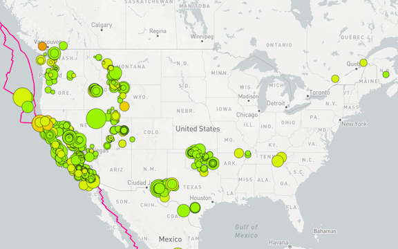
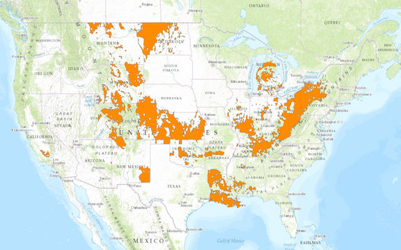

For this project, we were to visualize earthquake data for the USGS, with indicators for size (circumferance) and depth (color). The map links can be accessed below
An interesting observation that I made is that while most of the earthquakes are located near the intersection of tectonic plates, there are a number of quakes in the interior of the United Sates that are not near any of these lines. A quick search showed that the quakes in the interior rouhgly align with locations that oil drilling and fracking are occurring. Further analysis is suggested.
 